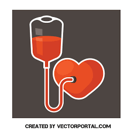

Our blood donation website is designed to be accessible and user-friendly for anyone looking to donate blood or find a blood donation center in their area. We understand that the process of donating blood can be daunting, which is why we have created a streamlined platform that simplifies the registration process and helps donors easily connect with the resources they need.By registering as a blood donor through our website, you will be able to access a variety of features that make the donation process more convenient and efficient. This includes the ability to schedule appointments at your preferred donation center, receive updates on blood donation events and initiatives in your area, and connect with other like-minded individuals who share your commitment to saving lives.
We believe that blood donation is one of the most important ways that individuals can give back to their communities and make a real difference in the world. Every blood donation has the potential to save lives and improve health outcomes for patients in need, and we are committed to making the donation process as simple and accessible as possible for everyone.Whether you are a first-time blood donor or a seasoned veteran, we welcome you to our platform and look forward to working with you to promote blood donation and improve the health and well-being of people around the world. Thank you for visiting our website, and we hope you find the resources and support you need to make a positive impact on the world through blood donation.
